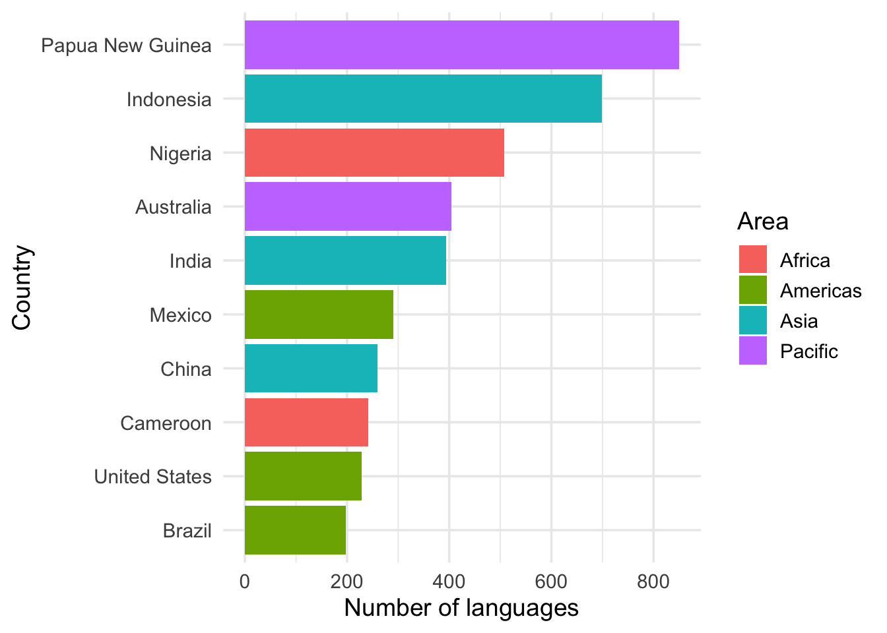

Practicum 4
Grafieken en tabellen voor categorische data
Leerdoelen
- visualiseren van categorische variabelen (factoren) met tabellen en staafdiagrammen (barplots) in
ggplot2; - de levels van categorische variabelen (factoren) herordenen en van naam veranderen;
- naar wens aanpassen van de kleuren van je grafieken.
Voorbereiding
Lees hoofdstuk 6 uit het dictaat. De benodigde R-functies zijn te vinden in het dictaat (zie ook eerdere hoofdstukken en practica). Functies die niet in het dictaat besproken worden, worden gegeven in de opdracht. Het ggplot2 cheatsheet geeft een overzicht van de mogelijkheden die ggplot2 biedt. Relevante cheat sheets vind je ook in een map op Brightspace (Content > Practica > R cheat sheets) en via de help-tab in RStudio.
Quarto
Vanaf deze week maak je de uitwerkingen in Quarto. Dit betekent dat je werkt in een qmd-bestand dat je in RStudio via de knop Render kunt omzetten naar een html-bestand.
Kopieer om te beginnen het bestand voornaam_achternaam_PracticumX.qmd uit de map templates_scripts_quarto in je Rproject naar de hoofdmap. Hernoem het bestand door je eigen naam in te vullen en het juiste nummer van het practicum. Open het bestand vervolgens vanuit RStudio. Maak voor afzonderlijke taken steeds een nieuw codeblokje aan en test de werking door je qmd-bestand tussendoor te renderen.
Meer informatie over Quarto kun je vinden in hoofdstuk 28 van Wickham et al. (2023) en op de Quarto website. Zie ook deel 2 van Practicum 3.
Talen van de wereld
De Ethnologue is een database met alle talen die op dit moment gesproken worden in de wereld. In dit practicum ga je op basis van data uit de Ethnologue tellingen en grafieken maken van het aantal talen in verschillende delen van de wereld.
Sla je script regelmatig op, zodat je geen code kwijtraakt. Klik hiervoor op het floppy-disk-symbool of gebruik de sneltoetsen Ctrl + S/Cmd + S. Render je script regelmatig, als een extra check voor de goede werking van je code.
Vanaf deze week vind je geen Hint en Code meer bij de opdrachten. Het is nu aan jou om het eerst helemaal zelf te proberen. Maak hierbij gebruik van de code uit de eerdere practica. Een voorbeelduitwerking verschijnt een dag na het practicum op Brightspace.
Voorbereiding van de data
We gaan werken met twee databestanden die je kunt vinden op de website van de Ethnologue: https://www.ethnologue.com/codes/. Het gaat om de volgende databestanden:
LanguageCodes.tabDit bestand bevat voor alle talen in de Ethnologue de volgende informatie: een identificeerder (LangID), code voor het land waar de taal (primair) wordt gesproken (CountryID), status van de taal (LangStatus,L= levend,X= uitgestorven), de naam van de taal (Name);CountryCodes.tabDit bestand geeft uitleg bij de codes voor landen (CountryID) uit het vorige bestand en bevat de volgende informatie: de code van het land (CountryID), de naam van het land (Name), en de regio waar het land in ligt (Area).
We gaan deze bestanden inlezen en ze samenvoegen tot een datatabel (dit heb je al een keer gedaan in Practicum 2).
- Download beide bestanden, voeg ze toe aan de map
datasetsin de mapOBS_practicaen lees ze vervolgens in inR. Dit zijn deurls voor beide bestanden: https://www.ethnologue.com/codes/LanguageCodes.tab, https://www.ethnologue.com/codes/CountryCodes.tab
- Bekijk de variabelen in beide datatabellen, pas hun namen aan aan onze richtlijnen en pas indien nodig hun meetniveau/type aan. Let op: zorg dat de variabele
Nameuit het bestandCountryCodes.tabuiteindelijk de naamcountry_namekrijgt. Dit om dubbele namen te voorkomen.
- Voeg de twee datatabellen samen tot een datatabel met de naam
ethnologue
- Sla de nieuwe datatabel
ethnologueop als een databestand met de naamethnologue.txt.
Opdrachten
Beantwoord op basis van de datatabel ethnologue onderstaande vragen. Onderbouw elk antwoord met R-code. Probeer er bij de eerste 4 opdrachten voor te zorgen dat de output van je code het antwoord geeft op de vraag en dus zo min mogelijk informatie bevat die irrelevant is voor de beantwoording van de vraag.
- Hoeveel talen worden er volgens Ethnologue gesproken in Nederland?
- Om welke talen gaat het?
- Hoeveel verschillende talen worden er gesproken in Europa?
- In welk land in Azië worden de meeste talen gesproken?
- In Figuur 1.1 zie je een grafiek met daarin de top 10 van landen in de wereld waar de meeste talen worden gesproken. Maak deze grafiek zo goed mogelijk na. Het kan hierbij helpen om de taak in stukjes op te delen: eerst de juiste data weergeven , dan in de juiste volgorde en tot slot alle afwerking (zoals kleuren en namen van assen).

- Maak voor een regio (
area) naar keuze een tabel waarin je voor elk land aangeeft wat het aandeel (proportie) is van dat land in het totaal aantal talen gesproken in die regio (afronden op 2 decimalen). Dus bijv. Brazilië is verantwoordelijk voor een proportie van 0.17 van de talen gesproken in de regio Americas.
- Maak nu een liggend staafdiagram van de data uit de vorige opdracht. Zorg ervoor dat je landen met een proportie van 0 niet weergeeft. Geef de staaf van een land naar keuze een andere kleur dan de rest. Zorg dat je ergens in de grafiek ook het totaal aantal talen gesproken in de regio vermeldt net als de bron van de data.
- Bereken per regio het percentage talen met een status
LenX(afronden op gehele getallen).
- Maak een grafiek van de data uit de vorige vraag waarmee je laat zien hoe het percentage uitgestorven talen verschilt per werelddeel. Zorg voor een logische ordening van de data.
- Pas de grafiek uit de vorige vraag aan, zodat deze opgenomen kan worden in een Nederlandstalig verslag. Zorg ervoor dat de status van de talen voluit wordt geschreven als ‘levend’ en ‘uitgestorven’.
Dit is het einde van practicum 4.